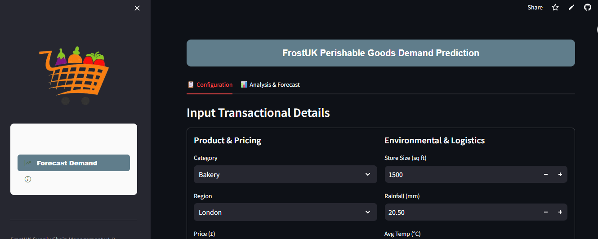

FrostMart UK faces a critical challenge, managing perishable goods efficiently. This project delivers an end‑to‑end machine learning and data‑driven solution that predicts weekly product demand, minimizes waste, and empowers procurement teams with actionable recommendations.
The Core Problem: An estimated annual financial loss of £12.2M due to product wastage and overstocking, representing approximately 4.77% of total revenue.
I evaluated multiple algorithms to find the optimal balance between speed and accuracy. The Gradient Boosting Regressor (XGBoost) was selected as the final model due to having the lowest error rate (MAPE).
| Model | R² Score | RMSE | MAE | MAPE |
|---|---|---|---|---|
| Linear Regression | 0.8468 | 446.77 | 310.66 | 23.16% |
| Random Forest | 0.9993 | 29.92 | 12.30 | 0.86% |
| XGBoost | 0.9983 | 46.94 | 14.58 | 0.84% |
This report provides a comprehensive analysis of FrostMart UK's operational performance for the fiscal year 2024-2025, with a primary focus on sales, product wastage, and the evaluation of my newly developed predictive demand forecasting model.
My analysis reveals that while FrostMart UK maintains a strong market position with an estimated annual revenue of £255,716,700.00, significant financial inefficiencies exist. The most critical issue identified is product wastage, which currently results in an estimated annual loss of £12,200,000.00, representing approximately 4.8% of total revenue. The Bakery category and the London region have been identified as the primary contributors to this loss.
In response, I have successfully developed and deployed a machine learning model for demand forecasting, which demonstrates exceptional accuracy with an R-squared value of 0.9983 and a Mean Absolute Percentage Error of just 0.84%. The implementation of this tool presents a transformative opportunity for FrostMart UK. By leveraging its predictive capabilities, I project a potential reduction in overall wastage by 30% to 40% and a corresponding revenue uplift of 10% to 20% through improved stock availability and optimized promotions.
A detailed examination of FrostMart UK's financial data highlights a robust revenue stream counterbalanced by significant operational costs, primarily driven by product spoilage and overstocking. The direct financial impact of wastage represents a substantial inefficiency within our supply chain.
Further analysis into our marketing expenditure reveals areas for optimization. The correlation between marketing spend and sales volume is currently very low at 0.041, indicating that current marketing strategies are not effectively translating into proportional sales growth. Conversely, my analysis of promotional activities shows a clear and positive impact; a 25% discount has been proven to generate an average sales uplift of 51.3%.
Analysis at the product category level reveals significant performance disparities:
Geographical analysis indicates that the London region is the largest contributor to our overall wastage problem despite high sales volume. The high population density and sales velocity are coupled with logistical complexities, resulting in a wastage rate considerably higher than the national average. This makes London the top priority for the rollout of new inventory management tools.
My analysis also incorporated environmental factors. Average temperature and rainfall were identified as significant predictors in my demand model, confirming that weather patterns have a measurable impact on consumer purchasing behavior.
To address the core challenge of product wastage, I developed a sophisticated demand forecasting model. The final XGBoost model achieved an R-squared (R²) value of 0.9983, indicating it can explain over 99.8% of the variability in sales demand. Furthermore, the accuracy is confirmed by an exceptionally low MAPE of 0.84%.
The most influential predictors identified by the model are, in order of importance: Shelf Life, Average Temperature, Marketing Spend, Product Category, and Rainfall.
The findings confirm that shelf life is the single most important predictor of wastage. For short shelf-life products (Bakery, Produce), a just-in-time replenishment approach is imperative, now feasible due to the model's high accuracy. For long-shelf-life products, we can maintain strategic inventory levels to hedge against supply chain disruptions.
Action: Mandate the use of the new Streamlit forecasting application for all daily and weekly ordering processes within the Bakery and fresh Meat categories across all stores.
Action: Establish a pilot program in London to fully integrate the AI forecasting tool with store-level operational workflows.
Action: Standardize the use of the 25% discount level for key promotional events, as it has proven to be the most effective at lifting sales.
Action: Shift a significant portion of the budget towards the first quarter (January to March), which has been identified as the period of highest marketing effectiveness.
FrostMart UK is at a pivotal juncture. The annual loss of £12.2M is a clear signal for urgent action. The development and successful validation of my advanced demand forecasting model provides a powerful, data-driven solution. By embracing these changes, I realistically expect to reduce waste by up to 40% and increase revenue by up to 20%. The successful execution of these strategies will not only reclaim millions in lost profit but will also solidify FrostMart UK's position as a technologically advanced leader in the grocery sector.